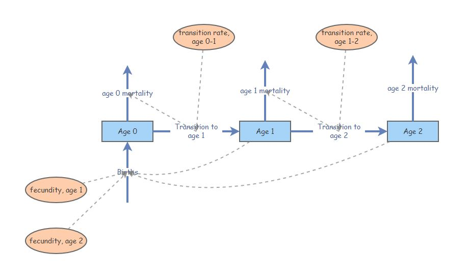
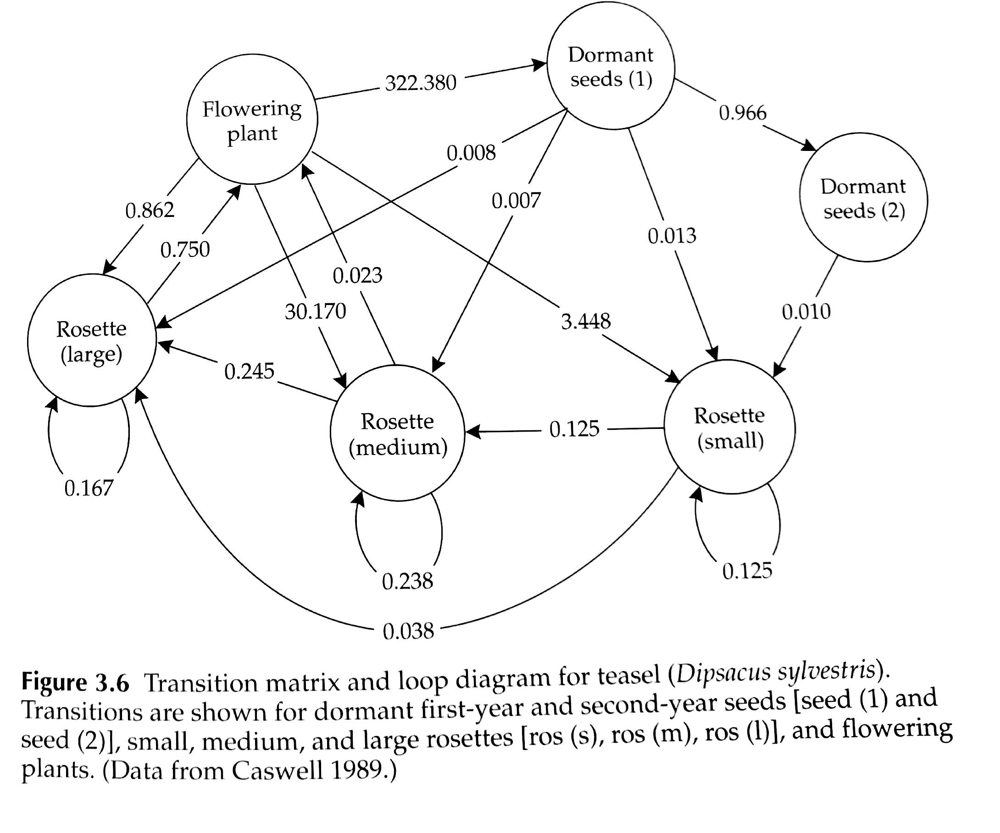
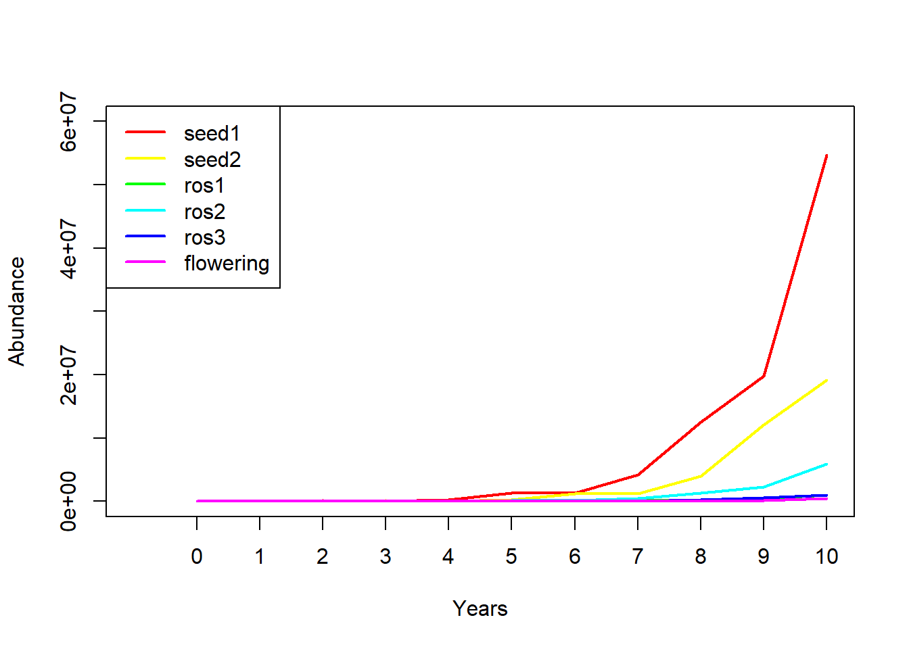
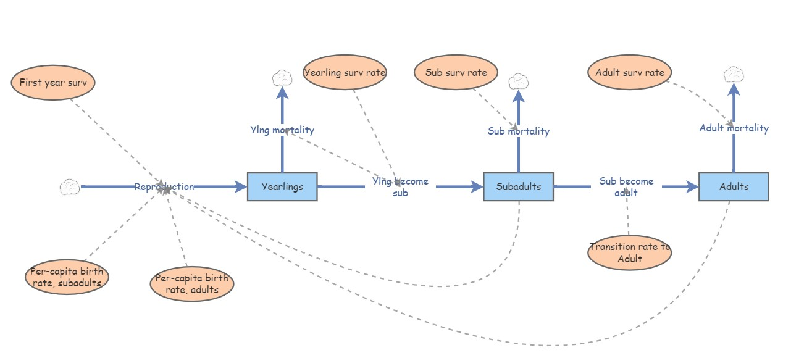
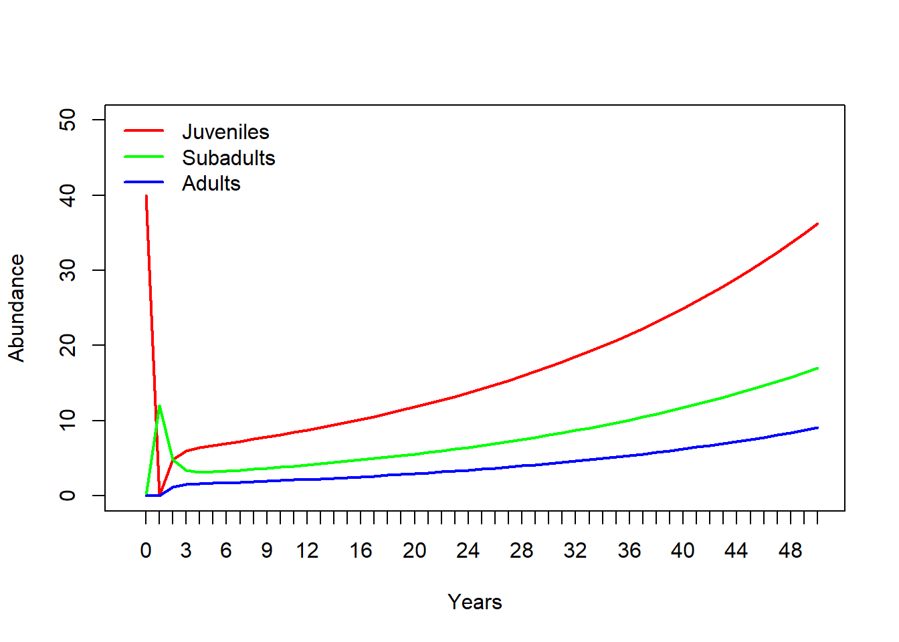

First of all, this lecture is full of R code (R makes it easy to run matrix population models!). If you want to follow along in R, you can find the R script here. I recommend right-clicking on the link, saving the script to a designated folder, and loading up the script in RStudio.

You might recognize this InsightMaker model from Lab 3. This represents an age-structured population with only three age classes. Imagine if there were five age classes, or 10? What if you could jump from (e.g.) stage 3 to stage 5? Or from stage 5 back to stage 3? How many lines would you have to draw, how many equations would you have to put in all the different flows? It would be tedious, and you could easily run into errors that would be very hard to uncover!
Consider the teasel example from our textbook. It’s possible to implement this model in InsightMaker, but it would be tedious and potentially prone to error. And this is far from the most complicated populations out there (although notice that plants can do some things that animals can’t do- for instance go backwards in developmental stage. With matrix models, there is an easier way!

The population vital rates for pretty much any age-structured or stage-structured population can be represented as a transition matrix (or, projection matrix), which summarizes all the information about survival, birth rates, and transitions between stages! (and the fact that a life history like teasel can be represented by a transition matrix illustrates the generality of this concept!)
For example, the teasel vital rates can be summarized in this matrix:
#########
# Teasel example from Gotelli: summarizing a complex life history!
teasel <- read.csv("teaselmatrix1.csv", header=T) # read in the teasel transition matrix from Gotelli
teasel <- teasel[,-1] # remove the row names
teasel_matrix <- as.matrix(teasel) # convert to a matrix (from a data frame)
colnames(teasel_matrix) <- names(teasel) # assign row and column names
rownames(teasel_matrix) <- names(teasel)
teasel_matrix # print the matrix## seed1 seed2 ros1 ros2 ros3 flowering
## seed1 0.000 0.00 0.000 0.000 0.000 322.380
## seed2 0.966 0.00 0.000 0.000 0.000 0.000
## ros1 0.013 0.01 0.125 0.000 0.000 3.448
## ros2 0.007 0.00 0.125 0.238 0.000 30.170
## ros3 0.008 0.00 0.000 0.245 0.167 0.862
## flowering 0.000 0.00 0.000 0.023 0.750 0.000Isn’t that elegant!!
In the previous lecture, we talked about ‘age-structured populations’. What we meant by that is that the population vital rates (e.g., b and d) varied by age.
Sometimes, it is convenient to classify individuals within a certain age range as belonging to a particular life-history stage. For example, we might classify the life history of a grizzly bear like this:
Age 0-1: newborn
Age 1-2: yearling
Age 2-5: subadult
Age 6+: adult
This can simplify our models considerably. For example, consider a species like a sea turtle, with up to 75 or 100 years of life. You could build a model in which you have 100 stocks, one for each year of life. OR, you could have 5 or so stocks representing age ranges in which sea turtles tend to have consistent(ish) vital rates. For example, we might divide the sea turtle life history into the following stages:
Age 0-1: hatchling
Age 1-5: young juvenile
Age 5-10: older juvenile
Age 10-17: subadult
Age 18+: adult
By using stages, we have simplified our model from having 100 stocks (with even more associated flows/transitions) to a model with only 5 stocks- and we are still accurately representing how vital rates change with age (the model is still biologically realistic).
Matrix population models can represent age-structured and stage-structured models with equal simplicity and elegance.
The term ‘Leslie Matrix’ refers to an age-structured matrix population model. When a matrix is used to represent a stage-structured population, it is often called a ’Lefkovitch" Matrix.
In one of the questions in Lab 3, your were asked to use a life table to predict the number of births in a population one time step in the future. As you probably realized, this is not as straightforward as it sounds!
Life tables are great for summarizing survivorship schedules and other aspects of age-structured populations. But life tables are not great for projecting age-structured abundance into the future!
You know what is great for projecting age-structured abundance into the future? (MATRICES of course!)
For example, let’s project a teasel population 1 year into the future:
First of all, we need to begin with a teasel population vector…
#############
# Summarize initial age-structured abundance as a matrix with one column
Initial_teasel <- matrix(c(1000,1500,200,300,600,25),ncol=1) # initial population size (population vector; matrix with 1 column!)
rownames(Initial_teasel) <- rownames(teasel_matrix) # add row and column names
colnames(Initial_teasel) <- "Abundance"
Initial_teasel## Abundance
## seed1 1000
## seed2 1500
## ros1 200
## ros2 300
## ros3 600
## flowering 25Then all we need to do is ‘matrix-multiply’ this vector of abundances by the transition matrix from above! Each time we do this multiplication step, we advance one year! It’s that easy!
NOTE: matrix multiplication (percent-asterisk-percent in R) is not the same as standard multiplication (asterisk in R). We will go over this in the intro to lab 4 a bit later.
Here’s how we can do this in R!
#########
# Project the population at time 1
Year1 <- teasel_matrix %*% Initial_teasel # note: the '%*%' denotes 'matrix multiplication' in R. We'll go through this more later.
Year1## Abundance
## seed1 8059.50
## seed2 966.00
## ros1 139.20
## ros2 857.65
## ros3 203.25
## flowering 456.90How easy is that?!
To compute teasel abundance in year 2 of our simulation, we can simply repeat:
#########
# Project the population at time 2
thisYear <- Year1
nextYear <- teasel_matrix %*% thisYear
nextYear # now we get the (age structured) population size at time 2! ## Abundance
## seed1 147295.4220
## seed2 7785.4770
## ros1 1707.2247
## ros2 14062.6102
## ros3 702.3908
## flowering 172.1635We could use this strategy to simulate abundance for ten years (or 20, or 30, or 10000)…
Notice the use of a for loop here!
########
# Use a for loop to project the population dynamics for the next 10 years!
nYears <- 10
tenYears <- matrix(0,nrow=6,ncol=nYears+1) # initialize storage array for recording age structured abundances for the next 10 years.
rownames(tenYears) <- rownames(Initial_teasel) # assign row and column names
colnames(tenYears) <- seq(0,10)
tenYears[,1] <- Initial_teasel # initialize the simulated abundances
##########
# run the for loop!
for(t in 2:(nYears+1)){ # here we use 't' as our looping variable, but we could choose any name we want
tenYears[,t] <- teasel_matrix %*% tenYears[,t-1] # perform matrix multiplication for each year of the simulation!
}
tenYears## 0 1 2 3 4 5
## seed1 1000 8059.50 147295.4220 55502.0530 274098.158 1254742.541
## seed2 1500 966.00 7785.4770 142287.3777 53614.983 264778.821
## ros1 200 139.20 1707.2247 2799.7179 5425.969 18197.711
## ros2 300 857.65 14062.6102 9785.5436 28718.972 126857.393
## ros3 600 203.25 702.3908 4889.4070 4390.907 13317.225
## flowering 25 456.90 172.1635 850.2331 3892.123 3953.716
## 6 7 8 9 10
## seed1 1274599.05 4160519.75 12493783.29 19821259.9 54739267.1
## seed2 1212081.29 1231262.68 4019062.08 12068994.7 19147337.1
## ros1 34866.57 77547.56 209719.50 440822.1 1018930.3
## ros2 160533.59 440850.62 1312972.86 2281135.7 5859547.7
## ros3 46750.08 68459.45 186131.95 505712.0 948267.5
## flowering 12905.64 38754.83 61484.15 169797.3 431750.1Finally, we can plot out the abundance of each stage over 10 years!

So projection is easy with matrices! What more reason do we need to convince ourselves of why matrix population models are worth knowing? Well, how about this…
There is a clear similarity between the finite population growth equation:
\(N_{t+1}=\lambda \cdot N_t\),
where \(N\) is abundance (as always), \(t\) is time, often in years but could be any time units, and \(\lambda\) is the multiplicative growth rate over the time period \(t \rightarrow t+1\)
… and the matrix population growth equation:
\(\mathbf{N}_{t+1} = \mathbf{A} \cdot \mathbf{N}_{t}\),
where \(\mathbf{N}\) is a vector of abundances (abundance for all stages), and \(\mathbf{A}\) is the transition matrix, which we have seen before.
Q: Can you see the similarity between these two equations?
Both equations describe simple exponential growth or decline!
Q: Can you see the difference between these two equations?
Note that \(N\) in the first equation is a scalar – that is, it is just a ‘naked’ number.
WHEREAS,
\(\mathbf{N}\) in the second equation represents an age-structured vector: a set of abundances structured by age or stage class.
Similarly, the finite population growth rate, \(\lambda\) is a scalar,
WHEREAS,
\(\mathbf{A}\) is a matrix (the transition matrix)
Okay one of the tricks is this:
In one step, you can compute \(\lambda\) from \(\mathbf{A}\)!!
All you need to do is obtain the first, or dominant, eigenvalue of \(\mathbf{A}\)! This number is the finite rate of growth, \(\lambda\), for an age or stage-structured population.
Recall that when a population is at stable age distribution, it grows in a discrete exponential growth pattern- this rate of exponential growth can be described by a single parameter – Lambda!
Let’s do this in R!
What is the growth rate \(\lambda\) for the teasel population. If you recall, it looked like it was growing, so it should be above 1…
###########
# Use the transition matrix to compute Lambda, or the finite rate of population growth!
library(popbio) # load the 'popbio' package in R!
Lambda <- lambda(teasel_matrix)
Lambda## [1] 2.32188# as.numeric(round(eigen(teasel_matrix)$values[1],2)) # this is an alternative method- if you don't want to use the 'popbio' packageYou don’t have to understand the math here- but I do want you to understand how simple that was- just one line of code and we computed the annual rate of growth from the teasel transition matrix!
Here’s another nifty trick:
In one step, you can compute stable age distribution (S.A.D) from \(\mathbf{A}\)!!
All you need to do is obtain the right-hand eigenvector of \(\mathbf{A}\)! This vector represents the relative abundances in each age class at the stable age distribution.
Let’s do this in R!
What is the stable age distribution for the teasel population. If you recall, the first seed stage looked like it dominated in the figure above.
##########
# Compute stable age distribution from the transition matrix!
library(popbio) # ... and it's even easier if we use the 'popbio' package...
SAD <- stable.stage(teasel_matrix)
SAD # stable age distribution as a percentage of the total population## seed1 seed2 ros1 ros2 ros3 flowering
## 0.636901968 0.264978062 0.012174560 0.069281759 0.012076487 0.004587164# #abs(as.numeric(round(eigen(teasel_matrix)$vectors[,1],3))) # alternative- doesn't use 'popbio'
# SAD/sum(SAD)Q: Does a stage-structured population grow at the rate of \(\lambda\) per time step if it is NOT at stable age distribution? [tophat]
To answer this question, you may find it helps to load an stage-structured model in InsightMaker like this one).
Let’s take a look at a basic stage-structured population – specifically this one - we used this model for running the ‘supplementation’ example in the ‘age structured populations’ lecture. In InsightMaker it looks something like this:

Let’s convert the vital rates to a three-stage projection matrix. Projection matrices are square matrices where the number of rows and columns are equal to the number of life stages. In this case, that means three! Let’s make a blank matrix for now:
###################
# In class demo: convert an insightmaker model to a matrix projection model
###########
# First, we specify a blank transition matrix
TMat <- matrix(0,nrow=3,ncol=3) # create a blank matrix with 3 rows and 3 columns
stagenames <- c("Juveniles","Subadults","Adults") # name the rows and columns
rownames(TMat) <- stagenames
colnames(TMat) <- stagenames
TMat # now we have an all-zero transition matrix.## Juveniles Subadults Adults
## Juveniles 0 0 0
## Subadults 0 0 0
## Adults 0 0 0You can read the elements of a transition matrix as follows:
“The per-capita production of (row name) by (col name) is (value of element)”
Now we can start filling in this matrix. Let’s begin with the top left element of the matrix. This represents the per-capita production of Juveniles (col) by Juveniles (row). What is the value of this element?
Let’s update our transition matrix:
#####
# fill in the top left element of the matrix
TMat[1,1] <- 0
TMat## Juveniles Subadults Adults
## Juveniles 0 0 0
## Subadults 0 0 0
## Adults 0 0 0How about the second row, first column. This represents the per-capita production of Subadults (row) by previous-year Juveniles (col). That is, the transition rate from juvenile to subadult. The value from our model is 0.3.
Let’s update our transition matrix:
#####
# update the second row, first column
TMat[2,1] <- 0.3
TMat## Juveniles Subadults Adults
## Juveniles 0.0 0 0
## Subadults 0.3 0 0
## Adults 0.0 0 0If we keep going, we get the following matrix. See if you can understand what this matrix is saying about the transitions from and two the three life stages.
#####
# and keep filling it in...
TMat[,1] <- c(0,0.3,0) # fill in the entire first column of the transition matrix
TMat[,2] <- c(0,0.4,0.1) # fill in the entire second column of the transition matrix
TMat[,3] <- c(4,0,0.85) # fill in the entire third column of the transition matrix
TMat## Juveniles Subadults Adults
## Juveniles 0.0 0.0 4.00
## Subadults 0.3 0.4 0.00
## Adults 0.0 0.1 0.85Now we can run a 40-year projection and compare it with the InsightMaker model. It should look the same!!
First we must specify the initial abundances in each stage:
######
# specify initial abundance vector
InitAbund <- c(40,0,0)
names(InitAbund) <- colnames(TMat)
InitAbund## Juveniles Subadults Adults
## 40 0 0So we are starting with only Juveniles…
#######
# Run the model for 40 years (using for loop)
nYears <- 40
allYears <- matrix(0,nrow=nrow(TMat),ncol=nYears+1)
rownames(allYears) <- rownames(TMat)
colnames(allYears) <- seq(0,nYears)
allYears[,1] <- InitAbund
for(t in 2:(nYears+1)){
allYears[,t] <- TMat %*% allYears[,t-1]
}
allYears## 0 1 2 3 4 5 6 7 8 9
## Juveniles 40 0 0.0 4.80 6.000 5.86800 5.871000 6.063630 6.287558 6.502333
## Subadults 0 12 4.8 1.92 2.208 2.68320 2.833680 2.894772 2.976998 3.077066
## Adults 0 0 1.2 1.50 1.467 1.46775 1.515907 1.571889 1.625583 1.679445
## 10 11 12 13 14 15 16
## Juveniles 6.717782 6.940941 7.172411 7.411727 7.658952 7.914392 8.178354
## Subadults 3.181526 3.287945 3.397460 3.510707 3.627801 3.748806 3.873840
## Adults 1.735235 1.793103 1.852932 1.914738 1.978598 2.044588 2.112781
## 17 18 19 20 21 22 23
## Juveniles 8.451123 8.732991 9.024259 9.325242 9.636263 9.957658 10.289772
## Subadults 4.003042 4.136554 4.274519 4.417085 4.564407 4.716641 4.873954
## Adults 2.183248 2.256065 2.331310 2.409066 2.489414 2.572443 2.658241
## 24 25 26 27 28 29 30
## Juveniles 10.632962 10.987600 11.354065 11.732753 12.124071 12.528440 12.946297
## Subadults 5.036513 5.204494 5.378077 5.557450 5.742806 5.934344 6.132270
## Adults 2.746900 2.838516 2.933188 3.031018 3.132110 3.236574 3.344522
## 31 32 33 34 35 36 37
## Juveniles 13.378090 13.824284 14.285360 14.761814 15.254160 15.762926 16.288661
## Subadults 6.336797 6.548146 6.766543 6.992225 7.225434 7.466422 7.715446
## Adults 3.456071 3.571340 3.690454 3.813540 3.940731 4.072165 4.207983
## 38 39 40
## Juveniles 16.831930 17.393319 17.973432
## Subadults 7.972777 8.238690 8.513472
## Adults 4.348330 4.493358 4.643223Now let’s plot it out!
#####
# and plot out the results!
plot(1,1,pch="",ylim=c(0,50),xlim=c(0,nYears+1),xlab="Years",ylab="Abundance",xaxt="n")
cols <- rainbow(3)
for(s in 1:3){
points(allYears[s,],col=cols[s],type="l",lwd=2)
}
axis(1,at=seq(1,nYears+1),labels = seq(0,nYears))
legend("topleft",col=cols,lwd=rep(2,3),legend=rownames(allYears))
Does this look the same as the InsightMaker results?
Matrix population models are great, but they have some limitations too.
In some ways, while introducing a new level of realism in our models – age-structure – we have been ignoring another type of realism that we introduced in earlier lectures- density-dependence (both positive and negative)!
Which vital rates are density-dependent? All? Some? It depends? Are the data available?
How do you incorporate density-dependence into a matrix population model?
How do you incorporate predator-prey dynamics into a matrix population model? [cue brain explosion]
ANSWER: use computer programming (e.g., InsightMaker!)
(we will do this on the whiteboard during lab!)
First, please review the introduction to loggerhead sea turtles here.
Next, download the Excel document for this example here. We will work through the Excel example in class.
Using your Excel spreadsheet, investigate four management scenarios for the loggerhead turtle population:
turtle excluder device
In Top Hat, please respond to the following question
Short Answer Question #1: Which of the four management recommendations would have the greatest positive effect on this population?
Translate the following paragraph into a matrix population model. Remember a matrix population model has two components- an initial abundance vector and a transition matrix.
NOTE: this is also a question in Lab 4!
We assumed that the red-tailed hawk life history could be described in terms of three major life stages: hatchling (first year of life), juvenile (largely individuals in their second year of life), and adult (generally the third year of life and beyond). We assumed that adults experienced an average of 20% mortality each year. Juvenile mortality was set at 25% per year. Approximately 10% of juveniles remain in the juvenile phase each year, and all other survivors transition to the adult stage. Finally, hatchlings had a 22% chance of surviving and transitioning to become juveniles. We initialized the population with 1000 hatchlings, 150 juveniles, and 5 adults. Adults are the primary reproductive stage, and produce an average of 3 new hatchlings each year. Juveniles that fail to transition to the Adult stage tend to produce only 1 new hatchling each year on average.
Q: What does the transition matrix look like? [tophat]
Q: What does the initial abundance vector look like?
Q: Is this population at stable stage-distribution? How can you tell?
Q: What is the growth rate of this population?
For more on matrix population models, the bible of this subject is this book by Hal Caswell.
And finally, check this out- this is a database of thousands of stage matrices for plants and animals around the world: